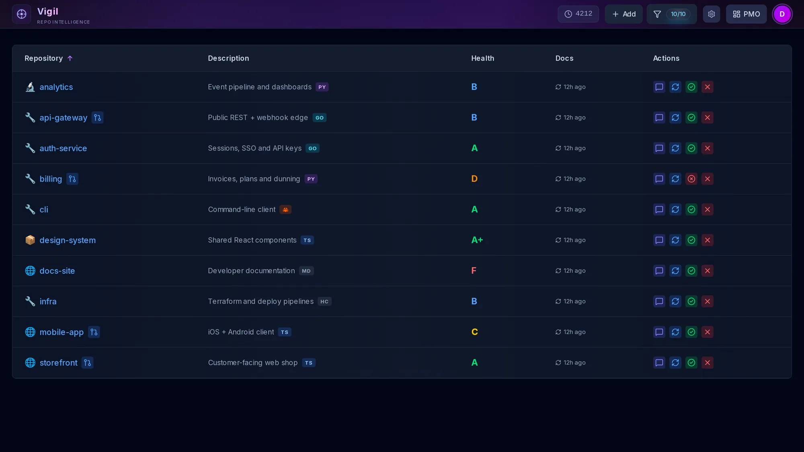
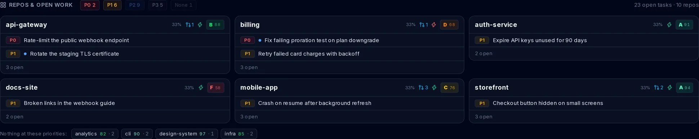
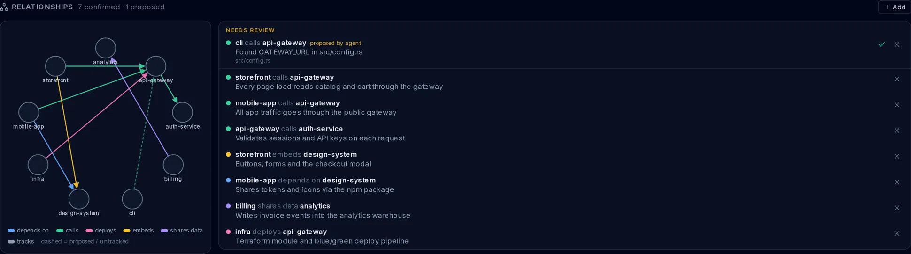

One dashboard
Every repo, graded.
Sign in with GitHub and sync. Each repo gets a 0–100 health score across security, testing, best practices, docs, community standards and activity, weighted by a Starter, Production or Enterprise profile. Missing a doc or a CI check? Vigil opens the fix as a pull request.

PMO
Open work. Most urgent first.
Every repo's TASKS.md is parsed on sync (priority, status, owner) and rolled into one grid. Each repo card lists its own open tasks, P0 first, and the cards are ordered by how urgent their work is. Repos with nothing at the selected priorities fold into one row.

Relationship map
Which repo uses which. And why.
Directed edges with a kind (calls, depends_on, deploys, embeds, shares_data, tracks) and a line of context. You add and confirm them. Agents can propose one with evidence, and it waits for your review.

Built for agents
Your agents read it too.
A JSON-RPC MCP server at /api/mcp works with claude mcp add over HTTP. GET /api/context returns the same portfolio as one LLM-ready JSON document.
- get_open_tasks
- get_relationships
- propose_relationship
- get_portfolio_overview
- list_repos
- get_repo_health
- get_repo_details
- list_tasks
- search_repos
- get_security_summary
> what should I work on next?
⏺ vigil · get_open_tasks (priority: P0, P1)
8 open · P0 2 · P1 6
P0 billing Fix failing proration test on plan downgrade
P0 api-gateway Rate-limit the public webhook endpoint
P1 api-gateway Rotate the staging TLS certificate
P1 billing Retry failed card charges with backoffRun your own.
Needs Node 22, a GitHub OAuth app and a free Neon Postgres database. Fill in .env.local from .env.example, then open http://localhost:3000.
$ git clone https://github.com/nitsuah/vigil.git
$ cd vigil
$ npm install
$ cp .env.example .env.local # GitHub OAuth + DATABASE_URL + MCP_API_KEY
$ npm run setup-db
$ npm run devThen connect Claude Code to your deployment:
$ claude mcp add --transport http --scope user vigil \
https://YOUR-VIGIL-HOST/api/mcp \
--header "Authorization: Bearer $VIGIL_MCP_KEY"